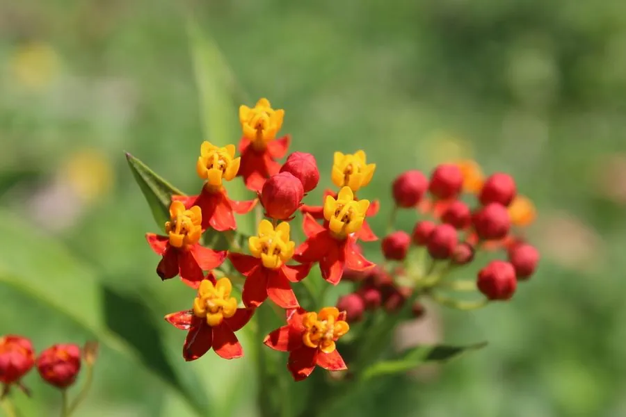

灌木与花木 · 植物界
马利筋 Asclepias curassavica

夹竹桃科马利筋属多年生灌木，花冠橙红、副花冠黄色，乳汁含强心苷，全株有毒，却是帝王蝶的寄主植物。
- 分类
- 门被子植物门纲木兰纲目龙胆目科夹竹桃科属马利筋属
- 栖息环境
- 热带美洲及归化地的路旁、荒地与灌丛，喜温暖、阳光充足
- 地理分布
- 原产热带美洲；中国华南、西南及世界热带、亚热带地区归化
- 保护级别
- IUCN 暂无评估；归化范围广，种群稳定
物种志
马利筋为多年生直立灌木，高 0.5–1.5 米，茎绿色或带紫红色，含白色乳汁。叶片对生，披针形至长圆状披针形，长 6–15 厘米。伞形聚伞花序腋生或顶生，花冠橙红色，副花冠黄色，形似小皇冠；蓇葖果纺锤形，成熟时开裂，种子顶端具白色绢毛，可随风飞散。
本种原产热带美洲，现广泛归化于中国华南、西南及世界热带地区，喜温暖、阳光充足的环境，耐旱、耐瘠薄。它是帝王蝶等斑蝶类幼虫的寄主植物，幼虫取食叶片后体内积累强心苷，从而对鸟类产生毒性。马利筋全株含强心苷，乳汁接触皮肤可致红肿，误食可引起心律失常甚至死亡；民间虽有用其根入药的记载，但必须在专业指导下使用。
形态与习性
- 株高0.5–1.5 米，茎含白色乳汁
- 花期几乎全年，花冠橙红色
- 果期夏秋季，蓇葖果纺锤形
- 光照强阳性，需充足直射光
- 水分耐旱，忌积水
- 土壤不择土壤，贫瘠地也能生长
- 毒性全株含强心苷，误食可致命
趣味知识
- 马利筋是帝王蝶的寄主植物，幼虫专吃它的叶片，并把毒素储存在体内。
- 它的白色乳汁含有强心苷，接触皮肤可能引起红肿，误食可导致心律失常。
- 马利筋的种子带白色绢毛，成熟时像蒲公英一样随风飘散。
- 它的花橙红配黄，形似小皇冠，英文名 Milkweed 意为“乳草”。
生态关系
- 捕食 ← 黑脉金斑蝶 幼虫取食马利筋并获得毒素